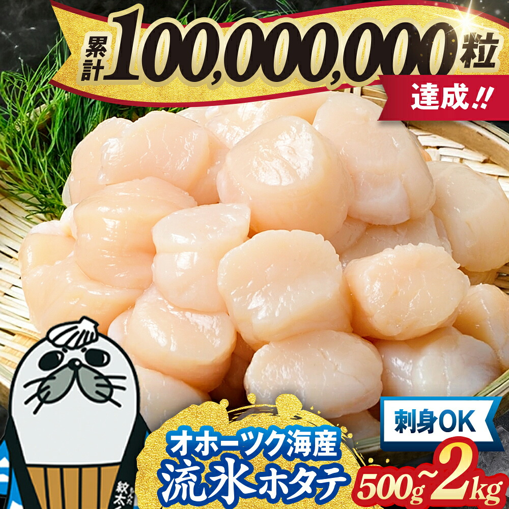
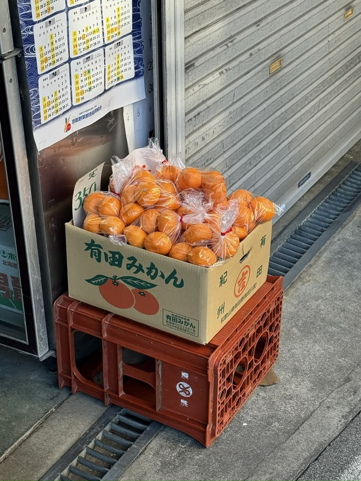
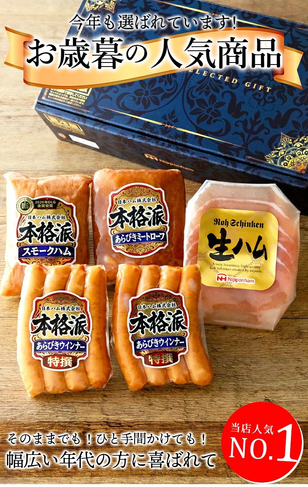
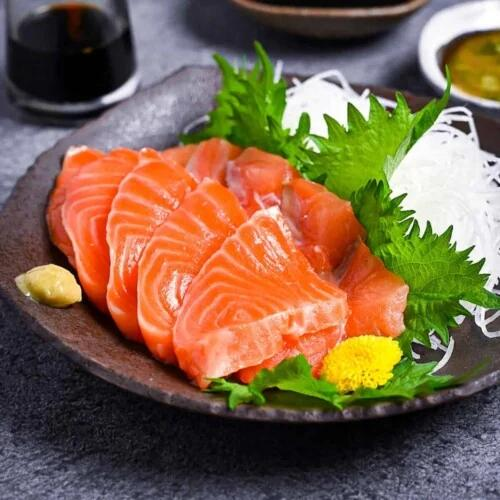
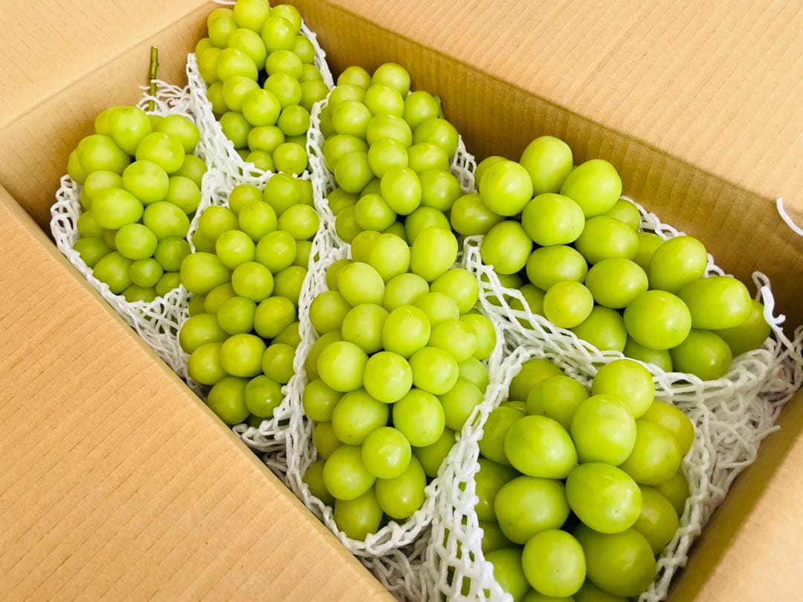
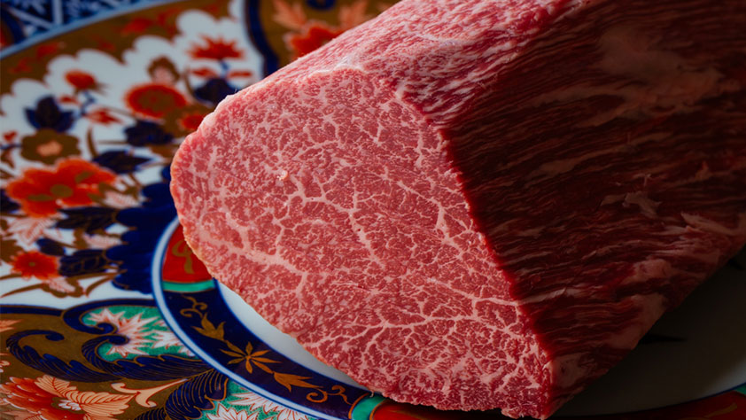
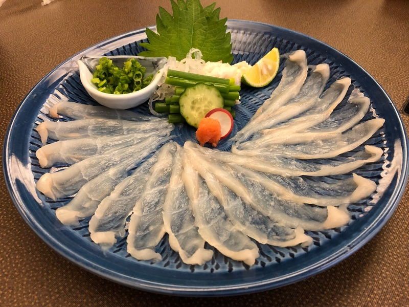
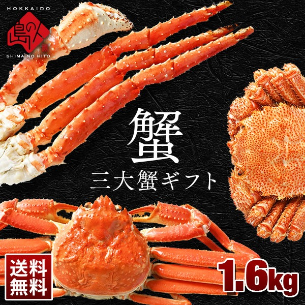
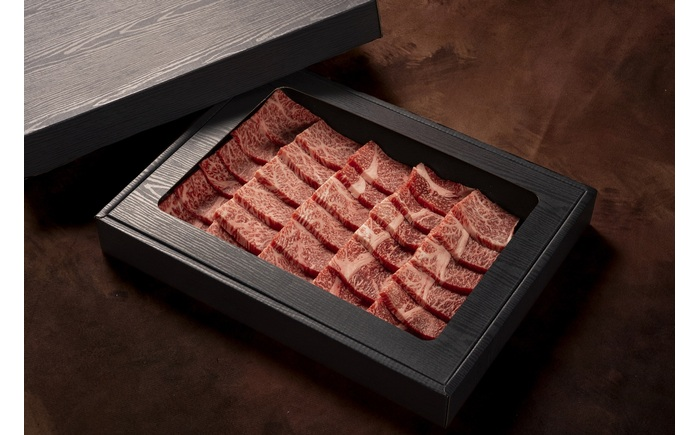
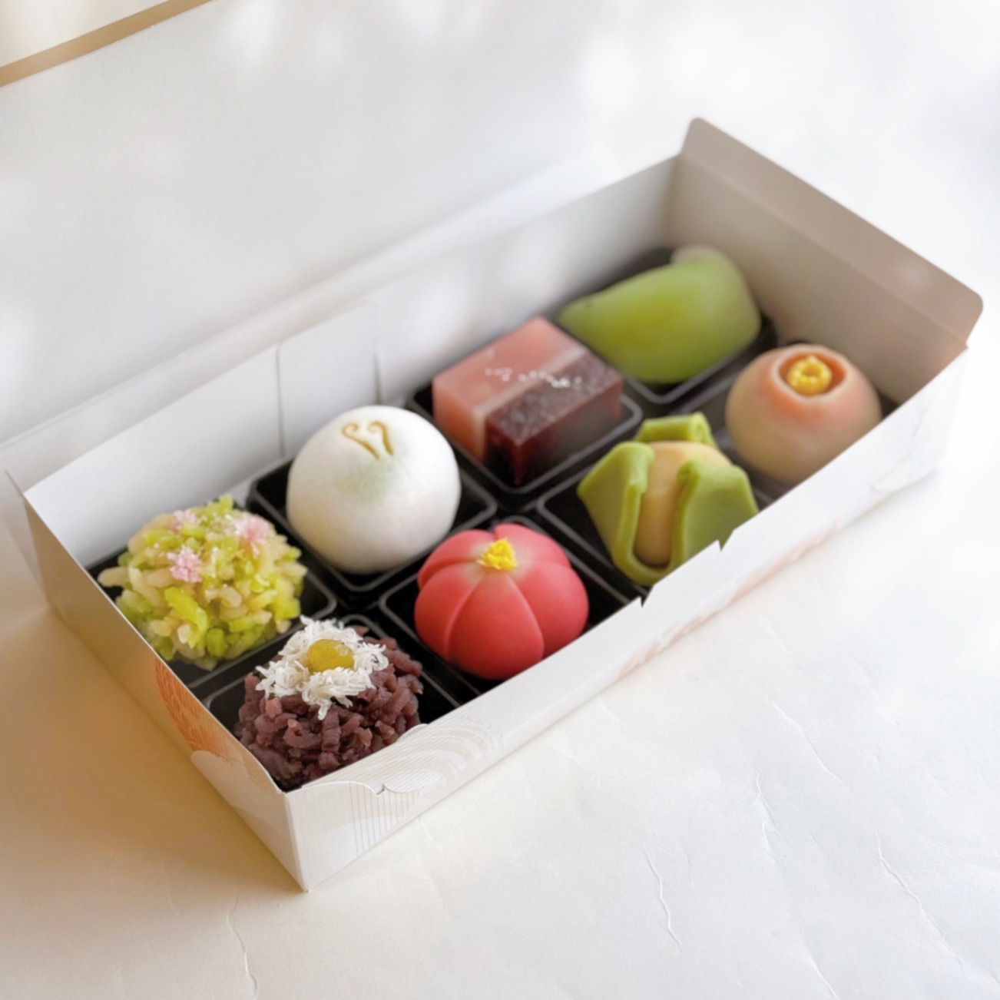

成増農園 信州育ちのりんごストレートジュース 1000ml×3本楽天ふるさと納税（長野市）／ 成増農園
産地直送のりんごで、店主が毎年買っている長野市の農園・成増農園。その成増農園のりんごジュースが、楽天ふるさと納税の返礼品になっています。今年も店主が購入しました。
「アフィリエイト宣伝しなくても、本当に良い品は売れるんです」— 店主のひとこと
- 内容
- りんごストレートジュース 1000ml×3本
- 寄附額の目安
- 15,000円（楽天ふるさと納税）
全国のお取り寄せグルメと、贈り物に喜ばれるギフトを正直に紹介します。誇大な表現はせず、良いところも注意点もそのままに。まずは今の季節に間に合う、お歳暮・冬ギフトからどうぞ。 Japanese gourmet gifts, honestly reviewed.

宣伝のために選んだ品ではありません。店主が実際に毎年買っていて、今年も購入した品を、そのまま紹介します。今回は長野県長野市の成増農園です。
産地直送のりんごで、店主が毎年買っている長野市の農園・成増農園。その成増農園のりんごジュースが、楽天ふるさと納税の返礼品になっています。今年も店主が購入しました。
「アフィリエイト宣伝しなくても、本当に良い品は売れるんです」— 店主のひとこと
当店の紹介リンクから実際に購入された雑穀米を新たに1品追加し、全16品を紹介します。ふるさと納税の返礼品と楽天市場のお取り寄せを合わせて、年末の駆け込み寄附や、ご自宅用のお取り寄せにも向く品です。内容量や寄附額はリンク先で最新をご確認ください。

熊本の「くまもと風土」の二十五雑穀米です（以下は商品ページの案内をもとにした紹介です）。国産の雑穀25種（もち麦、熊本県産の発芽玄米、アマランサスなど）をブレンドした、白米に混ぜて炊くタイプです。内容量は500g×2袋の計1kgで、くまモンのパッケージが目印です。価格は3,000円（確認時点）、送料無料です。実はこの商品、当店の紹介リンクから楽天に入った方が実際に購入された1品です。購入時はキャンペーン価格でしたが、売れた実績のある商品として、今回あらためて紹介に加えました。
注意点も正直に：配送はメール便で、発送は1〜5営業日以内、到着まで4〜10日ほどかかる場合があります。賞味期限はパッケージに記載されています。価格はキャンペーンで変動し、半額セールの時期には1,398円で販売されていたこともあります。詳細はリンク先でご確認ください。
※ 広告リンク（楽天アフィリエイト）です。価格・内容・送料はリンク先でご確認ください。写真は販売元の商品ページの画像です。
北海道紋別市の返礼品で、本間水産のオホーツク海産ホタテ貝柱です（以下は商品ページの案内をもとにした紹介です）。生食用の玉冷で、お刺身・フライ・バター焼きなどに使えると案内されています。内容量はバラエティサイズで500g・600g・800g・1kg・2kgから選べ、寄附額は500gが11,000円、600gが14,000円、800gが17,000円、1kgが18,000円、2kgが36,000円です。賞味期限は発送日から90日以上あるものが届くと案内されています（家庭用冷蔵庫では到着後1か月以内が推奨）。送料無料です。
注意点も正直に：大粒から小粒までサイズが不揃いの訳あり品です。地撒き養殖のため、まれに砂・殻が付着・混入することがあると明記されています。発送は入金確認後〜最長2か月程度で、着日・曜日の指定はできません。年内配送は12月14日決済完了分（オンライン決済限定）までと案内されています。詳細はリンク先でご確認ください。
※ 広告リンク（楽天アフィリエイト）です。寄附額・内容量・受付状況はリンク先でご確認ください。写真はホタテ貝柱のイメージです（返礼品そのものの写真ではありません）。
小樽の洋菓子舗ルタオの看板チーズケーキ「ドゥーブルフロマージュ」と、チョコレート味の「ショコラドゥーブル」の2個セットです（以下は商品ページの案内をもとにした紹介です）。4号（直径12cm）×2個で2〜4名用、総重量660g。冷凍（-18℃以下）で届き、冷蔵庫で5〜8時間かけて解凍します。賞味期限は冷凍状態で10日以上お日持ちするものが届くと案内され、解凍開始から48時間以内に食べることとされています。価格はこの組み合わせで5,580円（税込）、送料無料です。
注意点も正直に：このセットにギフト用化粧箱は付きません。贈り物にする場合は包装の有無を商品ページで確認してください。1個あたり4号（直径12cm）で、小ぶりに感じるという声もあります。組み合わせにより価格は5,480円〜5,580円の幅があります。詳細はリンク先でご確認ください。
※ 広告リンク（楽天アフィリエイト）です。価格・内容・送料はリンク先でご確認ください。写真はドゥーブルフロマージュのイメージです（商品そのものの写真ではありません）。
宮崎県宮崎市の返礼品で、鰻楽の九州産うなぎ蒲焼です（以下は商品ページの案内をもとにした紹介です）。国産のうなぎ蒲焼160g以上×3尾（計480g以上）に、たれ3袋・さんしょう3袋が付きます。小分けの冷凍パックで、1尾ずつ使えます。賞味期限は出荷日より1か月以上先のものが届くと案内されています。寄附額は15,000円で、送料無料です。ページ内には「年越しうなぎ特集」があり、年末年始向けの品として案内されています。
注意点も正直に：発送は入金確認後1〜2か月以内に順次発送のため、年越し用に考えている場合は発送時期をリンク先で必ずご確認ください。詳細はリンク先でご確認ください。
※ 広告リンク（楽天アフィリエイト）です。寄附額・内容量・受付状況はリンク先でご確認ください。写真はうなぎ蒲焼のイメージです（商品そのものの写真ではありません）。
和歌山県有田市の返礼品の温州みかんです（以下は商品ページの案内をもとにした紹介です）。内容量は約5kgまたは10kg×1箱（サイズS・M・L）から選べます。賞味期限は2週間程度が目安です。送料無料です。
注意点も正直に：皮に傷がついた家庭用の訳ありみかんです（味は有田みかん本来のものと商品ページに記載されています）。のし対応・ギフト対応はできないため、贈り物用ではなく、自宅用・お試し用として紹介します。寄附額の詳細はリンク先でご確認ください。
※ 広告リンク（楽天アフィリエイト）です。寄附額・内容量・受付状況はリンク先でご確認ください。写真は有田みかんのイメージです（返礼品そのものの写真ではありません）。
宮城県気仙沼市の返礼品で、カネダイの生本ずわいがに棒肉ポーションです（以下は商品ページの案内をもとにした紹介です）。殻むき不要の生のむき身で、かにしゃぶ・刺身・天ぷら・バター焼きに使えると案内されています。内容量は約500g（正味約380g・20本〜30本）／約1kg（正味約760g・40本〜60本）から選べ、賞味期限は出荷から3か月（要冷凍）です。発送月を選ぶことができ、12月10日決済完了分まで年内発送と案内されています。
注意点も正直に：寄附額は約500gが16,000円、約1kgが28,000円です。詳細はリンク先でご確認ください。
※ 広告リンク（楽天アフィリエイト）です。寄附額・内容量・受付状況はリンク先でご確認ください。写真は生ずわいがにポーションのイメージです（返礼品そのものの写真ではありません）。
お歳暮の定番、日本ハム「本格派」のハム詰め合わせです（以下は商品ページの案内をもとにした紹介です）。NH-37は5種詰合せ（パストラミローフ128g、ロース生ハム27g、スモークボロニア105g、特撰あらびきウインナー66g、特撰ホワイトウインナー66g）で賞味期間60日、NH-52は6種詰合せ（ホワイトロースハム160g、ペッパーボロニア105g、焼豚140g、ロース生ハム27g、特撰あらびきウインナー66g、あらびきミートローフ128g）で賞味期間50日。冷蔵便で届きます。
注意点も正直に：価格は2026年11月12日時点の早割価格で、NH-37が2,540円、NH-52が3,380円です（早割は12月1日11:59まで）。送料無料ですが、離島・沖縄は別途送料の場合があります。早割終了後は価格が変わるため、詳細はリンク先でご確認ください。
※ 広告リンク（楽天アフィリエイト）です。価格・内容・送料はリンク先でご確認ください。写真は日本ハム「本格派」ギフトのイメージです（商品そのものの写真ではありません）。
脂のりが特徴のアトランティックサーモンを、白糠町で小骨を取り除いて小分け加工した返礼品。お刺身はもちろん、カルパッチョやレアステーキにも。エンペラーサーモンは400g〜1.6kg、アトランティックサーモンは600g〜1.6kgから内容量が選べ、「訳あり」タイプもあります。訳ありは身割れや形のばらつき等が理由で、味は通常品と変わらないと案内されています。
注意点も正直に：着日の指定はできません。小骨は取り除かれていますが、まれに残る場合があると明記されています。解凍は冷蔵庫で8〜10時間ほどが目安です。
※ 広告リンク（楽天アフィリエイト）です。寄附額・内容量・受付状況はリンク先でご確認ください。写真はサーモンのお刺身のイメージです（返礼品そのものの写真ではありません）。
厚さ約10mmにカットし、塩味で味付けした牛タン。解凍して焼くだけで、焼肉やBBQの主役になります。内容量は500g、または1kg（500g×2パック）から選べ、1kgには3か月定期便もあります。1kgは発送時期が選べるスピード発送対応の案内があります。
注意点も正直に：原材料の牛タンは輸入牛（アイルランド産・ウルグアイ産など）で、花巻市内の工場でスライス・味付け加工された返礼品です。「国産」ではありません。配送日の指定は承っていないと明記されています。
※ 広告リンク（楽天アフィリエイト）です。寄附額・内容量・発送時期はリンク先でご確認ください。写真は厚切り牛タンのイメージです（返礼品そのものの写真ではありません）。
熊本県氷川町の返礼品のお米。氷川町オリジナルのブレンド米「ひごみのり」や、ひのひかり（令和8年産）などから選べ、精米方法は白米・無洗米の2通り。内容量は5kg・10kg・20kg（いずれも5kg袋の小分け）で、3か月・6か月・12か月の定期便もあります。最短当日出荷の案内があり、出荷時期も選べます。
注意点も正直に：この返礼品は令和8年熊本地震の復興支援クラウドファンディング対象で、寄附金は氷川町の復興支援プロジェクトに使われます。「ひごみのり」は複数原料米（ブレンド米）で、単一銘柄米ではありません。また、寄附申込み後のキャンセルや返礼品の変更・返品はできないと明記されています。
※ 広告リンク（楽天アフィリエイト）です。寄附額・内容量・受付状況はリンク先でご確認ください。写真は炊きたての白米ご飯のイメージです（返礼品そのものの写真ではありません）。
種がなく皮ごと食べられる、山梨県産シャインマスカットの返礼品です（以下は商品ページの案内をもとにした紹介です）。容量は500g・1kg・1.2kg・1.5kg・2kg・3kgから選べ、冷蔵・クール便で届きます。発送は2026年分（8月下旬〜11月中旬）と、2027年先行予約分があります。送料無料です。
注意点も正直に：生鮮品のため、届いたらお早めにお召し上がりください（賞味期限の日数表示は商品ページにありません）。寄附額は容量によって変わるため、詳細はリンク先でご確認ください。
※ 広告リンク（楽天アフィリエイト）です。寄附額・内容量・受付状況はリンク先でご確認ください。写真はシャインマスカットのイメージです（返礼品そのものの写真ではありません）。
白糠町の返礼品のいくら醤油漬けです（以下は商品ページの案内をもとにした紹介です）。200gパックの小分けで、1パック（200g）から12パック（合計2.4kg）まで選べます。冷凍で製造日から2年保存できると案内されており、発送時期は30営業日以内／2026年12月／2027年1月〜3月から選択できます。年末年始のごちそうやお歳暮にも向く品です。送料無料です。
注意点も正直に：原材料の鮭卵はアメリカ産です（北海道産の鮭卵ではありません）。寄附額はパック数によって変わるため、詳細はリンク先でご確認ください。
※ 広告リンク（楽天アフィリエイト）です。寄附額・内容量・受付状況はリンク先でご確認ください。写真はいくら醤油漬けのイメージです（返礼品そのものの写真ではありません）。
都城市の返礼品の宮崎牛です（以下は商品ページの案内をもとにした紹介です）。宮崎牛は5等級・4等級のみを使用すると案内されています。内容量は500g・1kg・2kg、部位は「赤身＆霜降り」または「赤身のみ」、カットは焼肉用・スライス・しゃぶしゃぶ・サイコロステーキから選べます。冷凍保存で出荷日より60日。発送時期は入金後14日以内／2026年12月／2027年1月から選択でき、年末年始のごちそうに向く品です。送料無料です。
注意点も正直に：寄附額は内容量・部位・カットの組み合わせによって変わります。詳細はリンク先でご確認ください。
※ 広告リンク（楽天アフィリエイト）です。寄附額・内容量・受付状況はリンク先でご確認ください。写真は宮崎牛のイメージです（返礼品そのものの写真ではありません）。
山形県産の洋梨「ラ・フランス」秀品を化粧箱入りでお届けする返礼品です（以下は商品ページの案内をもとにした紹介です）。内容量は3kg（8〜9玉）・5kgから選べます。発送は2026年11月頃〜12月上旬の予定で、年末のふるさと納税の候補にも向く品です。送料無料です。
注意点も正直に：申込受付は2026年11月15日までです。生鮮品のため、お届け後はお早めにお召し上がりください（賞味期限の日数表示は商品ページにありません）。寄附額は内容量によって変わるため、詳細はリンク先でご確認ください。
※ 広告リンク（楽天アフィリエイト）です。寄附額・内容量・受付状況はリンク先でご確認ください。写真はラ・フランスのイメージです（返礼品そのものの写真ではありません）。
博多の老舗・博多若杉のもつ鍋セットです（以下は商品ページの案内をもとにした紹介です）。国産牛もつ240gに濃縮スープ、ちゃんぽん麺2玉、薬味が付いた2人前のお試しセットで、キャベツやニラなど野菜を足して作るタイプです。冬の食卓の一品に。賞味期限は冷凍で90日です。
注意点も正直に：送料は無料ですが、北海道・沖縄は追加送料300円がかかります。価格は醤油味・基本セットのもので、内容の組み合わせによって変わる場合があるため、詳細はリンク先でご確認ください。
※ 広告リンク（楽天アフィリエイト）です。価格・内容・送料はリンク先でご確認ください。写真はもつ鍋のイメージです（商品そのものの写真ではありません）。
下関のふぐ問屋・山西水産の鍋セットです（以下は商品ページの案内をもとにした紹介です）。ふぐ切り身300g・ふぐしゃぶ150g・つみれ10個にスープ500g、ぽん酢・もみじおろしが付いた3〜4人前のセットです。化粧箱入りで、お歳暮の贈り物にも向く品です。賞味期限は冷凍で120日です。
注意点も正直に：送料は無料ですが、沖縄・北海道は別途送料1,500円がかかります。価格・内容の詳細はリンク先でご確認ください。
※ 広告リンク（楽天アフィリエイト）です。価格・内容・送料はリンク先でご確認ください。写真はふぐ料理のイメージです（商品そのものの写真ではありません）。お歳暮の定番から、北陸・金沢の名産まで。気になるカテゴリのボタンを押すと、楽天市場の検索結果が開きます。気になった商品は、販売元の情報（内容量・配送・のし対応）をよく確認してからどうぞ。

冬の主役はやっぱり蟹。タラバガニ・毛ガニ・ズワイガニの食べ比べや、海鮮詰め合わせはお歳暮でも特に喜ばれます。解凍方法と到着日指定の可否をチェック。
※ 広告リンクを含みます
家族で囲むすき焼き用スライスは、特別感と実用性を兼ねた鉄板ギフト。部位（ロース／モモ）とグラム数、冷凍か冷蔵かで満足度が変わります。
※ 広告リンクを含みます
見た目の華やかさならフルーツ。メロンや旬のいちごは、お酒を飲まない方や年配の方にも贈りやすい選択です。食べ頃の目安が付いている商品が安心。
※ 広告リンクを含みます
季節の意匠が美しい上生菓子や、日持ちする羊羹・最中の詰め合わせ。目上の方への手土産にも外しません。生菓子は日持ちが短いので到着日に注意。
※ 広告リンクを含みます
ロイズをはじめとする北海道のチョコレートや焼き菓子は、職場へのばらまきにも、自分へのご褒美にも。個包装かどうかを贈る相手に合わせて選びましょう。
※ 広告リンクを含みます金沢を拠点に活動する案内所ならではの枠。加賀の和菓子、のどぐろや寒ブリといった北陸の海の幸など、地元の名産を順次紹介していきます。
※ 広告リンクを含みます「誰に・いくらで・何系を」が決まれば、探すのは簡単です。3つ選ぶと、条件に合ったキーワードで楽天市場を検索できます。
お歳暮の目安は、一般的に3,000円〜5,000円、特にお世話になった方へは5,000円〜10,000円ほど。予算ボタンで絞り込めます。価格は目安で、実際はリンク先でご確認ください。
日持ちして分けやすい、間違いのない一枠。職場やご近所へのお歳暮にも。個包装タイプが配りやすいです。
常温で贈れて、年配の方にも喜ばれる優しい甘さ。国産果汁を使ったものは香りが違います。
干物・漬け魚・海鮮珍味などの詰め合わせ。お酒のあてにも食卓にも使える、実用派の選択です。
冷凍で届いて焼くだけ。共働きのご家庭や実家への贈り物に重宝します。個包装・ソース付きが便利。
箱を開けた瞬間の存在感は随一。化粧箱入り・食べ頃シール付きを選ぶと、贈られた側も安心です。
年末の食卓が一気に華やぐ王道。脚の太さ（サイズ表記）と総重量、ボイル済みかどうかを確認して選びましょう。
特に感謝を伝えたい方へ。A5ランク表記だけでなく、産地と部位、グラム数を比べて選ぶのが正直な選び方です。
メロン・いちご・柑橘など旬の詰め合わせ。見た目も味も文句なしで、家族の多いお宅にも向きます。
※ 各カードのボタンは広告リンク（アフィリエイト）です。表示価格は目安で、送料の有無もリンク先でご確認ください。
同じギフトでも、届ける時期とのしの書き方で印象が変わります。代表的な4シーンの要点だけ、簡潔にまとめました。
一年のお礼を伝える贈り物。のしの表書きは「お歳暮」。地域差はありますが、年内に届くよう早めの手配が安心です。喪中の方へも贈れますが、年明けは「寒中見舞い」として。
相手の好みを優先できる場面。生ものは到着日指定ができる商品を。メッセージカード対応の有無も購入前に確認を。
いただいた額の半額〜3分の1が目安。のしの表書きは「内祝」、水引は紅白の蝶結び。名前を入れる場合は注文画面の指定欄を使います。
その場で開けて皆で楽しめるものが喜ばれます。日持ちよりも「今おいしいもの」。地元・金沢の名産は話のタネにもなります。
案内所が商品を紹介するときに実際に確認している観点です。そのまま、ご自身の買い物チェックにも使えます。
人数・冷蔵庫の余裕・お酒や甘いものの好み。立派な品より「無理なくおいしく食べきれる量」が喜ばれます。
内容量・産地・賞味期限・配送温度帯・のし対応。写真の印象だけで決めず、仕様欄まで確認するのが正直な選び方です。
良い口コミより、サイズ感や到着状態への不満が判断材料になります。直近のレビューを優先して確認しましょう。
この案内所は、TikTok「お取り寄せギフト案内所 Japan Gifts」のホームページです。動画では商品の実物や販売元の素材をもとに、良いところも注意点もそのまま紹介します。PR投稿は必ず明記します。
はい。楽天市場へのリンクには楽天アフィリエイトの広告が含まれ、リンク先で購入されると運営者に紹介料が入る場合があります。そのため各リンク近くに「PR」「広告リンク」の表示をしています。紹介料の有無で商品の評価を変えることはしません。
このページに書いた金額は「予算の目安」です。実際の価格・送料・在庫は時期によって変わるため、必ずリンク先の商品ページで最新情報をご確認ください。
方針として、実物または販売元が提供する正確な素材・情報を確認できた商品を紹介します。誇大な表現はせず、気になる点があれば注意点として併記します。TikTokの投稿でも同じ方針で、PRの場合は必ず明記します。
一般的には12月20日頃までの到着が目安とされますが、人気商品は早期に締め切られます。11月下旬〜12月上旬の注文が安心です。到着日指定ができるか、注文前に商品ページでご確認ください。
TikTokのコメントでお気軽にどうぞ。いただいたリクエストの中から、販売元の情報が確認できるものを順次取り上げます。